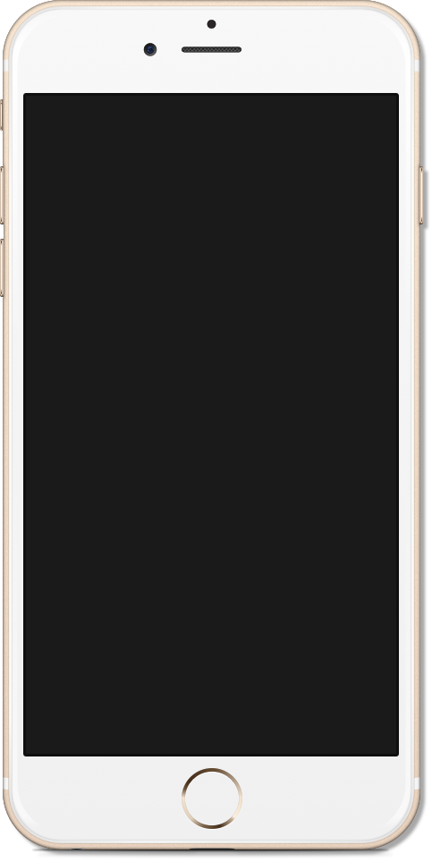
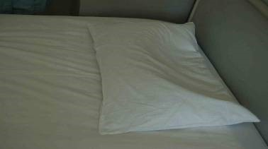
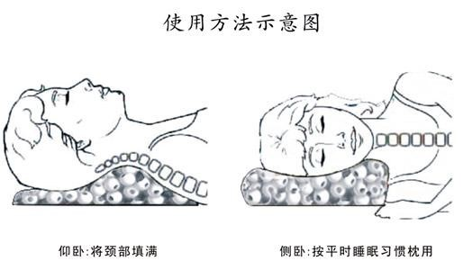
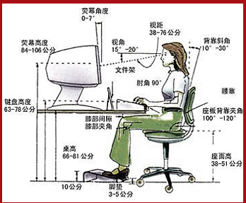
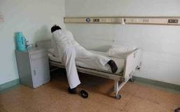
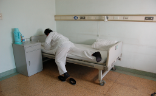
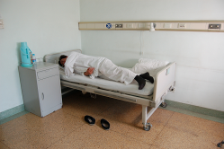
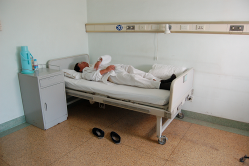

一、手法治疗须知：备齐影像学资料（CT、核磁等）
1、手法治疗一般每周1-2次；必要的间隔更有利于关节周围软组织的修复。
2、有些疾病可能影响手法治疗，请患者不要隐瞒曾经被诊断或怀疑的某些其他疾病。
3、部分敏感患者手法后会出现偶有不适或疼痛，属正常反应，一般2-3天即可缓解。
（如有再损伤引起疼痛加重应向经治医生咨询）
4、患者行手法治疗期间，一定不要自行增加其他辅助治疗，遵医嘱进行功能锻炼，否则会影响手法的疗效。
二、颈椎病手法后须知：
1. 限制颈部活动，保持手法复位效果，勿低头过久，
勿猛回头，避免颈部过度转动。
2. 枕头的要求；质地（枕头应有弹性，枕心不要过硬，以荞麦皮为好）；高度（以压缩后与自己的拳高为宜，颈曲反张严重者，枕头高度可随病情需要适当调低）；形状（接触颈椎部分应呈圆柱状，以便衬托和支撑颈曲,图示），保持头低，颈高，背平的位置。
3. 注意颈部保暖。



三、腰椎间盘突出症手法后须知：
1、 卧床休息：病人需取侧卧位或仰卧屈膝位，膝下垫一软枕。急性期病人绝对卧床休息至症状明显改善为止。（使用消炎痛栓时，在护士指导下取侧卧位或截石位，避免脊柱扭转）
2、 上下床方法：以俯卧翻滚式为最佳姿势。目的保持脊柱良好的力线和巩固疗效。（下图示）
3、 翻身法：当病人需要由仰卧位改为侧卧位时，患肢屈膝平移至床的一侧，另一下肢伸直，肩，腰在同一水平位上，保持脊柱同时翻转，不能扭转脊柱。
4、 日常生活注意平衡动作，双手取物品双手提物品，减少单臂运动；取放床头柜物品时直立下蹲避免腰部过度弯曲；
5、 手法治疗当晚洗澡时禁止用热水长时间冲洗腰部。
6、 平时注意饮食起居；多吃蔬菜水果和易消化吸收的食品，保持大便通畅。
7、 注意腰部及患肢的保暖，防止感冒：感冒会引起全身肌肉张力增高，引起肌肉的不协调痉孪，加重病情；打喷嚏或咳嗽时可靠墙站立或平卧于床上，也可以保持屈胯屈膝位，使腰部放松，减少震动。
8、 遵医嘱行走锻炼时穿着软底轻便鞋，不能穿拖鞋避免摔跤。





四、静脉输液（肌肉注射）须知:
1、 输液前请作好准备（入厕；热敷手背血管）；
2、 输液（肌肉注射）中感觉不适请及时告诉责任护士；
3、 输液后用大拇指顺血管走行按压血管并抬高上肢举过头顶5分钟；
4、 晚间临睡前热敷静脉穿刺（肌肉注射）部位30分钟，以减轻机械性刺激。
五、中药熥敷须知：
1. 患者取平卧位，熥敷温度为38-42度（注意药包是温热敷，接近人体温易吸收，不是越烫越好）。方法：以手背用力按压药包不感到烫为宜，防止温度高引起烫伤；封闭治疗后及第一次热敷药包温度应该适度的低一些。
2. 部位一般为病变部位，药袋应直接接触皮肤，勿用塑料布相隔，以免影响疗效。
3. 时间一般为20-30分钟为宜，2次/日。
4. 女性经期月经量比平时增多时，需暂停热敷；
5. 手法治疗与中药熥敷应间隔30分钟。
中药包的蒸制法：
1、新的中药包放在温水中浸泡30分钟（此后药包无需浸泡打湿即可）
2、从水中拎起来拧干以不滴水为宜；
3、放入锅蒸，从凉水到开蒸40分钟；（试温度同上）
4、一个药包使用一星期；
5、每次熥敷后将其放在通风干燥处，避免霉菌产生。
六、封闭治疗须知：
1. 我们使用的都是无需做过敏试验的药物。如以前曾有药物过敏史，应提前告知医生。
2. 有时可能因紧张等因素出现体位性晕厥或疼痛性休克，所以请患者不要隐瞒既往病史，并尽量放松情绪，配合完成治疗。
3. 封闭操作时，恐惧或体位变化可能导致肌肉痉挛、滞针等现象，因此，患者应尽量保持放松状态，当需要咳嗽等体位变化动作时，一定要先向医生示意，避免发生意外。
4. 勿空腹接受封闭治疗。
5. 个别病人封闭治疗后颜面部及全身会有发热，当晚入睡较前困难；偶有头痛现象，药物代谢后症状自行消退。
6. 封闭治疗后，中药熥敷勿敷封闭针眼处，当晚禁止洗澡以防止针眼处感染。
7. 腰臀部封闭时，神经根可因暂时受到阻滞，部分患者站立行走时出现腿软，无力，麻木等感觉，注意药包温度，应卧床休息至麻醉作用完全消失或减轻，以免出现意外。
8. 遵医嘱在疼痛门诊行封闭治疗时，由家人陪同；穿刺针眼处三天勿沾水，皮肤保持干燥。
9. 放烫伤，防跌倒。
七、理疗牵引须知：
1、 理疗时除去身上金属物品，如手表，手机、呼机、项链、戒指、耳环、钥匙等。女病员带宫内环者请向医生说明。
2、 理疗牵引过程中出现不适请及时告知护士。
3、 牵引后平躺休息15分钟方可返回病房。
八、功能锻炼须知：
1. 严格遵照医嘱的运动处方，循序渐进，持之以恒地进行锻炼。
2. 锻炼过程中如有不适应及时停止并报告经治医生。
3. 运动的增加易引起出汗，请及时增减衣服和补充水分并预防感冒。
九、矫形鞋治疗须知：
1. 矫形鞋的选择： 遵医嘱到护士站购买相应鞋款。
2. 矫形鞋的厚度：一般由经治医生根据骨盆倾斜旋转的程度而定。
3. 穿着方法：当医生允许下床行走锻炼时方可穿着矫形鞋，行走时保持身体直立，行走速度不要太快，循序渐进；依病情及身体状况而定行走时间，一般以不感疲劳，能耐受无特殊不适为宜。
十、颈（腰）围的使用须知：
1、 尺寸要选择合适，颈围的上下缘应使颈部固定于中立位为宜，对颈曲反张者，围领的后方不宜过高；腰围的上缘需达肋下缘，下缘到臀裂以下不宜使用过短的腰围以免造成腰椎过度前凸而不稳定。
2、 松紧要适宜（以呼吸不受限为宜），过松不起作用，过紧易造成血液循环障碍或皮肤损伤。
3、 使用时间应严格遵医嘱，不宜久戴，以免形成依赖性，出现肌肉萎缩，关节僵硬，活动度降低等不良后果。（急性期使用腰围时，应躺着戴并躺着摘）
4、 住院期间外出检查时应佩戴腰围保护。
严格遵医嘱使用颈（腰）围
急 性 期：除了在床上休息以外，其他任何活动都要戴围腰；
亚急性期：长时间行走或坐汽车时一定要戴围腰；在家卧床及一般活动时一定不要佩戴围腰；
慢 性 期：只在坐汽车时戴围腰；出门旅行或出差途中戴围腰；
康 复 期：一般活动不需要戴围腰；长途坐车（1小时以上）时需要戴围腰。
2017.6
出院宣教